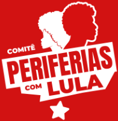

Vira 2026
A eleição para Presidente em painéis
Painéis
A virada de 2026
Onde a virada aconteceu e quem virou
→
Resultado do 2º turno
Por estado e município, comparado com 2022 e 2014
→
Postagens
Painel de Postagens
Carrosséis, fios e reels do 2º turno
→
Postagens (pessoal)
Versão em preto e branco para perfil pessoal
→
@periferiascomlula.oficial